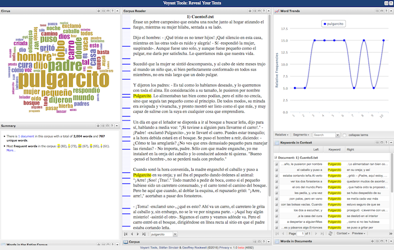

INTEGRATING DH SKILLS, METHODS OR TOOLS IN THE LANGUAGE CURRICULUM?
Created by Susanna Allés Torrent /
@sallesto
Slides available at: http://dh-laic.com/susanna/Hartford
Main problems to implement DH in Modern Languages Curricula
- DH Distrust?
- Lack of an organized plan
- Language teachers want to teach language, not technology
- Different teaching goals of Language Learning and DH
Lisa Spiro overview on DH Courses (2011)
| Assignments | Components | Media | Key Concepts | Technologies |
|---|---|---|---|---|
| Participation | Hands-on Learning | Text | Data / Databases | XML |
| Paper | Group works | Video | Open Acces / Copyright | TEI |
| Blogging | Audio | Network | Omeka | |
| Presentation | Images | Interaction | PHP | |
| Projects | Games | Zotero | ||
| Exam | Maps | Perl | ||
| Exercices | Simulations | SQL/mySQL | ||
| Project Plan | 3D Models | Python | ||
| Wikis | HTML, CSS | |||
| Javascript... |
Lisa Spiro, Knowing and Doing: Understanding the Digital Humanities Curriculum, NITLE Labs, June 2011 [Presentation].
Courses at LAIC
- Advanced Language Through Content
- Introduction to Undergraduate Research
- DH Courses
- Introduction to DH
- Minimal Editions: From the Manuscript to the Web
1. Advance Language Through Content (Spanish, 3300)
“An intensive exposure to advanced points of Spanish grammar and structure through written and oral practice, along with an introduction to the basic principles of academic composition in Spanish. Each section is based on the exploration of an ample theme that serves as the organizing principle for the work done in class”.
| Topic | Activities | Tools | DH Technologies |
|---|---|---|---|
| What is Digital Humanities and what kinds of projects? | Discussion in groups on the Manifesto DH Definitions |
Forums, PiratePad, GoogleDrive, Youtube | |
| Basic principles of HTML and CSS | Creating a Digital Identity | HTML, CSS | |
| Text Encoding | XML Encoding | HTML editor; Boilerplate | XML-TEI |
| Electronic Text Analysis | Exploring a text | Voyant Tools | |
| Collation | Collate personal writings vs corrections | Juxta | |
| Analysis of DH Projects | Web, Blog | ||
| Collaboration | Final project: creation of a website |
HTML + CSS - Building a digital identity - Programming - Writing
XML Encoding - Textual Analysis - Grammar
Electronic Text Analysis - Voyant Tools - Speaking
Collation Tool: Juxta
Collaborative Webpage
2. Introduction to Undergraduate Research
| Topic / Goal | Tools / Resources | Technologies |
|---|---|---|
| Location and description of primary sources | Online Catalogues | MARC, Metadata |
| Editing primary sources | Command Line, HTML editor... | Latex, Markdown, Pandoc, XML, TEI |
| Explores scholarly bibliography | Zotero | XML, MARC, Maps |
| Writing and documenting a research piece | Web Publication, Scalar, VMachine | HTML, CSS, CMS |
Projects with Scalar (1):
Projects with Scalar (2):
Projects with Scalar (3):
Project with Version Machine:

DH Courses in Spanish
1. Introduction to Digital Humanities
2. Minimal Editions: From the Manuscript to the Web
Introduction to DH
| Topic / Goals | Activities | Technologies |
|---|---|---|
| Introduction: DH deinition, History, Projects | Reading Analysis of DH projects |
|
| Computer basics: terminal, file system, servers | Terminal exercices | Terminal, formats, GitHub |
| Build a Web Page | Personal Website | HTML, CSS, CMS, Jekyll |
| XML and Text Encoding Initiative | XML editor, TAPAS, Boilerplate, VMachine | XML-TEI, Schemas |
| Text mining and text analysis | AntConc, Voyant, R-Studio | |
| Metadata for GLAM (Galleries, Libraries, Archives and Museums) | Creation of Metadata | MARC, Dublin Core, MODS, METS, ... |
Personal webpages
Personal webpages
Final Projects
2. Minimal Editions
| Topic / Goals | Activities | Technologies |
|---|---|---|
| Textual Criticism | General readings + Exercises | GitHub |
| Lazarillo de Tormes | Analysis primary source and secondary readings | |
| Digital Editing | Text Encoding | XML-TEI |
| Digital Insfrastructure | Construction of the web infrastructure | HTML, CSS, Markdown, Jekyll |
| Data transformation | From XML to HTML | XSLT |
| Publication | Servers | GitHub Pages |
The Student's Wiki
Conclusions
- Different goals of DH and Language Learning that need to be inteconnected
- Lack of materials in Spanish dealing with DH and focusing on Language Learning
- Language Learning + DH = Open field that deserves to be further explored